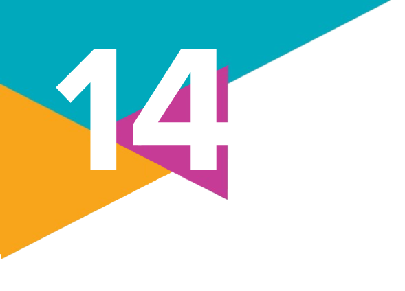

1.
Sobre o tema da exclusão digital, indique no caderno qual dos seguintes desafios é central para a construção de uma sociedade da informação mais justa e inclusiva no Brasil.
a) Aumentar a velocidade de conexão à internet em todo o território nacional.
b) Promover a alfabetização digital e o acesso universal às Tecnologias Digitais da Informação e Comunicação (TDICs).
c) Estimular a produção de conteúdo digital nacional em detrimento de conteúdo estrangeiro.
d) Criar leis mais rígidas para o controle e a censura da informação na internet.
e) Incentivar a competição entre empresas de tecnologia para reduzir os preços dos dispositivos eletrônicos.
a) Aumentar a velocidade de conexão à internet em todo o território nacional.
b) Promover a alfabetização digital e o acesso universal às Tecnologias Digitais da Informação e Comunicação (TDICs).
c) Estimular a produção de conteúdo digital nacional em detrimento de conteúdo estrangeiro.
d) Criar leis mais rígidas para o controle e a censura da informação na internet.
e) Incentivar a competição entre empresas de tecnologia para reduzir os preços dos dispositivos eletrônicos.
2.
Leia o excerto a seguir.
O Facebook aplica literalmente um slogan bem conhecido de todos os especialistas em marketing: "Se é de graça, você é o produto". O "produto", neste caso, são os dados que cada usuário fornece à rede social sempre que reage a várias publicações - via "curtidas", ou emoticons - que ele mesmo disponibiliza, ou pesquisa.
• O capitalismo de plataforma é um modelo econômico contemporâneo que se caracteriza pelo papel central das plataformas digitais na organização e na geração de valor. Explique o papel dos dados dos usuários nessa nova fase do capitalismo.
O Facebook aplica literalmente um slogan bem conhecido de todos os especialistas em marketing: "Se é de graça, você é o produto". O "produto", neste caso, são os dados que cada usuário fornece à rede social sempre que reage a várias publicações - via "curtidas", ou emoticons - que ele mesmo disponibiliza, ou pesquisa.
"SE é de graça, você é o produto": saiba como Facebook lucra com dados de usuários. RFI, [s. l.], 20 mar. 2018. Disponível em: https://www.rfi.fr/br/mundo/20180320-se-e-de-graca-voce-e-o-produto-saiba-como-facebook-lucra-com-dados-de-usuarios. Acesso em: 16 set. 2024.
• O capitalismo de plataforma é um modelo econômico contemporâneo que se caracteriza pelo papel central das plataformas digitais na organização e na geração de valor. Explique o papel dos dados dos usuários nessa nova fase do capitalismo.
3.
(Uece – 2024) Uma das características das sociedades modernas hoje é a adoção contínua e ampliada do uso de tecnologias comunicacionais e informacionais na vida cotidiana. Serviços bancários, comércio eletrônico, telessaúde, serviços de transportes e de entregas por aplicativos e as redes sociais são constantes nas interações do dia a dia de milhões de pessoas em países como Brasil e EUA. Porém, ao mesmo tempo que esse avanço é rápido, existe lentidão na absorção crítica e consciente no uso dessas tecnologias, além do surgimento de atuais problemas sociais como os variados tipos de crimes digitais, a precarização dos trabalhadores de aplicativo, o vício no uso de redes sociais e transtornos psicológicos associados, além da propagação, por vezes sem controle, de notícias falsas. É necessário que governos, sociedade civil e grandes empresas operadoras dessas tecnologias se responsabilizem e tomem medidas que possam conscientizar, amenizar e combater esses problemas gerados pelas tecnologias que deveriam servir para o melhoramento da vida em sociedade.
Considerando o enunciado, é correto afirmar que:
a) as novas tecnologias comunicacionais promovem transformações sociais que não podem ser barradas por excessos de controle governamental ou privado.
b) a multiplicidade de serviços possibilitados pelas novas tecnologias de informação alcança muito mais pessoas, mas de modo irregular e criminoso.
c) as empresas que operam o ambiente virtual das redes sociais são as que têm menor parcela de culpa no uso irresponsável da internet pelas pessoas viciadas.
d) o desenvolvimento de tecnologias de informação e comunicação está em descompasso com o uso reflexivo e adequado por parte dos seus usuários.
Considerando o enunciado, é correto afirmar que:
a) as novas tecnologias comunicacionais promovem transformações sociais que não podem ser barradas por excessos de controle governamental ou privado.
b) a multiplicidade de serviços possibilitados pelas novas tecnologias de informação alcança muito mais pessoas, mas de modo irregular e criminoso.
c) as empresas que operam o ambiente virtual das redes sociais são as que têm menor parcela de culpa no uso irresponsável da internet pelas pessoas viciadas.
d) o desenvolvimento de tecnologias de informação e comunicação está em descompasso com o uso reflexivo e adequado por parte dos seus usuários.
4.
Leia o trecho a seguir e faça o que se pede.
Regulação da internet é essencial para combater ataques a escolas [...]
[...] Somente depois do ataque à escola em Blumenau, no dia 5 de abril [de 2023], 225 pessoas foram presas ou apreendidas, no caso de menores, por suspeitas de envolvimento no caso. Além disso, a Justiça já retirou ou suspendeu 756 perfis em redes digitais dedicados a difundir ódio, conforme o ministro da Justiça.
Por regular redes sociais e serviços de mensagens, a proposta é considerada um instrumento importante para combater a violência nas escolas. [...]
Entre as regras que o projeto estabelece estão a retirada imediata, da internet, de conteúdos que possam causar dano iminente de difícil reparação ou que violem direitos de criança e adolescentes. Também deverão ser imediatamente excluídas publicações que coloquem em risco a segurança do usuário ou que contenham crimes previstos na Lei do Racismo (Lei 7.716/89).
a) Após o ataque ocorrido em uma escola brasileira em abril de 2023, a responsabilização das empresas de tecnologia pelos crimes de ódio e incitação à violência praticados por usuários tornou-se uma das controvérsias que surgiram durante a elaboração do Marco Civil da Internet. Pesquise sobre essa regulamentação e indique possíveis razões para tal medida ter dividido opiniões na sociedade brasileira.
b) O debate sobre a regulamentação das redes sociais está presente em outros países? De que maneira?
Regulação da internet é essencial para combater ataques a escolas [...]
[...] Somente depois do ataque à escola em Blumenau, no dia 5 de abril [de 2023], 225 pessoas foram presas ou apreendidas, no caso de menores, por suspeitas de envolvimento no caso. Além disso, a Justiça já retirou ou suspendeu 756 perfis em redes digitais dedicados a difundir ódio, conforme o ministro da Justiça.Por regular redes sociais e serviços de mensagens, a proposta é considerada um instrumento importante para combater a violência nas escolas. [...]
Entre as regras que o projeto estabelece estão a retirada imediata, da internet, de conteúdos que possam causar dano iminente de difícil reparação ou que violem direitos de criança e adolescentes. Também deverão ser imediatamente excluídas publicações que coloquem em risco a segurança do usuário ou que contenham crimes previstos na Lei do Racismo (Lei 7.716/89).
NEVES, M. Regulação da internet é essencial para combater ataques a escolas, aponta Flávio Dino. Agência Câmara de Notícias, [Brasília, DF], 18 abr. 2023. Disponível em: https://www.camara.leg.br/noticias/953831-regulacao-da-internet-e-essencial-para-combater-ataques-a-escolas-aponta-flavio-dino/. Acesso em: 16 set. 2024.
a) Após o ataque ocorrido em uma escola brasileira em abril de 2023, a responsabilização das empresas de tecnologia pelos crimes de ódio e incitação à violência praticados por usuários tornou-se uma das controvérsias que surgiram durante a elaboração do Marco Civil da Internet. Pesquise sobre essa regulamentação e indique possíveis razões para tal medida ter dividido opiniões na sociedade brasileira.
b) O debate sobre a regulamentação das redes sociais está presente em outros países? De que maneira?